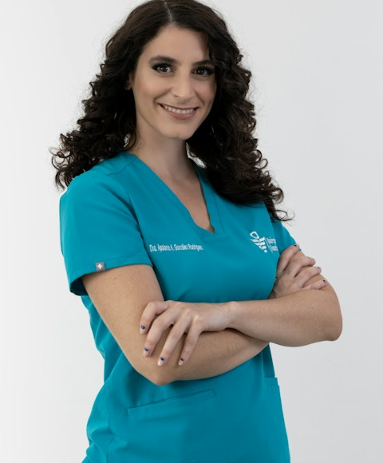

Psicoterapia Infantil
Suporte emocional e comportamental para crianças, com orientação integrada à família em todas as etapas do processo.
Cuidar da mente também é uma forma de florescer. Um espaço de escuta ética, cuidado individualizado e transformação genuína.
Na língua Guarani, Arandu significa sabedoria — um nome escolhido para refletir a essência do trabalho: presença, escuta e crescimento genuíno.
A Arandu nasceu com o propósito de oferecer cuidado psicológico acessível, humanizado e baseado em evidências. Aqui, cada atendimento é construído com base na história única de quem chega — sem atalhos, sem protocolos genéricos.
Integramos escuta clínica, ciência psicológica e estratégias individualizadas para crianças, adolescentes e adultos. O compromisso é com o desenvolvimento real e duradouro de cada pessoa que confia a nós o seu processo.
Cada modalidade é conduzida com rigor técnico e sensibilidade clínica, respeitando o tempo e as necessidades de cada pessoa.
Suporte emocional e comportamental para crianças, com orientação integrada à família em todas as etapas do processo.
Terapia individual voltada para questões emocionais, relacionais e existenciais — com escuta atenta e sem julgamentos.
Atendimento especializado em autismo e condições do neurodesenvolvimento, com abordagem baseada em evidências.
Processo estruturado de avaliação com uso de instrumentos validados, gerando relatório técnico fundamentado.
Suporte às famílias no desenvolvimento de estratégias saudáveis para a criação e o relacionamento com os filhos.
Sessões com taxa acessível para garantir que o cuidado psicológico chegue a quem mais precisa.
“Cada pessoa possui sua própria história. O cuidado começa quando ela encontra um espaço seguro para ser escutada.”David Azulay de Azevedo — Psicólogo
Especialista em Psicopedagogia Clínica, com atuação focada em neurodesenvolvimento, intervenções comportamentais, autismo e deficiência intelectual.
Especialista em psicoterapia para adultos e adolescentes, com abordagem baseada na terapia cognitivo-comportamental e atenção plena.

CRP 20/00000Atuação voltada à psicoterapia infantil e orientação parental, com foco no desenvolvimento emocional e comportamental na primeira infância.
Substitua as fotos e dados de “Nome do Profissional” pela equipe real antes de publicar.
Av. Japurá, 1414 Praça 14 de Janeiro Manaus / AM
Terça a Sábado Manhã · Tarde · Noite
@arandupsi